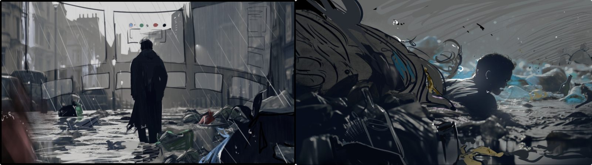

Fifty years from now, a flood carries the city's garbage back to human society. How should we deal with it?
The game is set fifty years in the future in West Westminster — the area with London's lowest recycling rate and most serious environmental problems, also home to a large homeless population and at great risk of flooding. Our game envisages that fifty years from now, a flood carries garbage back to human society, and asks: how should we deal with it?

We designed a set of interactive mechanics — shooting and picking — combining garbage types with recycling colour codes, to teach players how to sort recyclable from non-recyclable waste and recycle it efficiently.
A flooded, trash-filled street environment — the primary interaction space for shooting and sorting garbage as it drifts past.
A darker, more claustrophobic underground space that raises the stakes as players push further into the reclaimed city.